/conversion-optimization: G2 local implementation review
Production build local preview. Not pushed. See G2_IMPLEMENTATION_REPORT.md for copy, files, tests and deviations. Section screenshots were taken with the shared analytics-consent banner hidden; the first-screen shots include it.
First screen
Desktop 1440x780
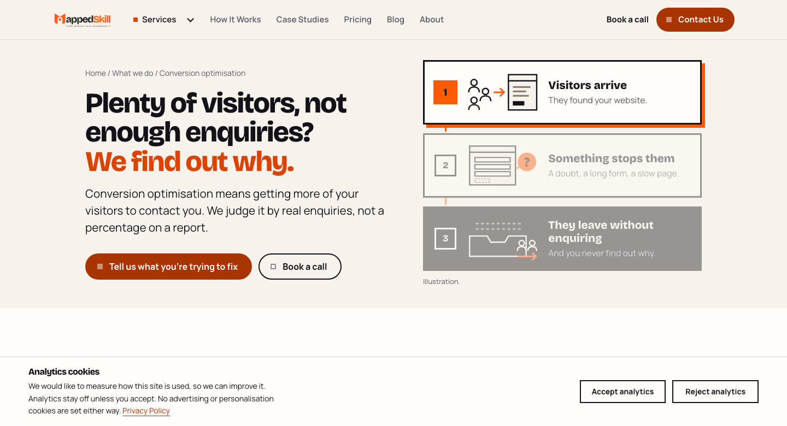
Mobile 375x812
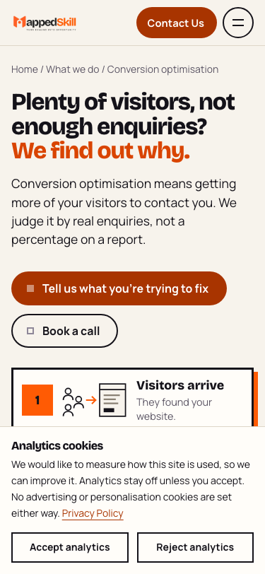
Hero
Approved G1 mockup
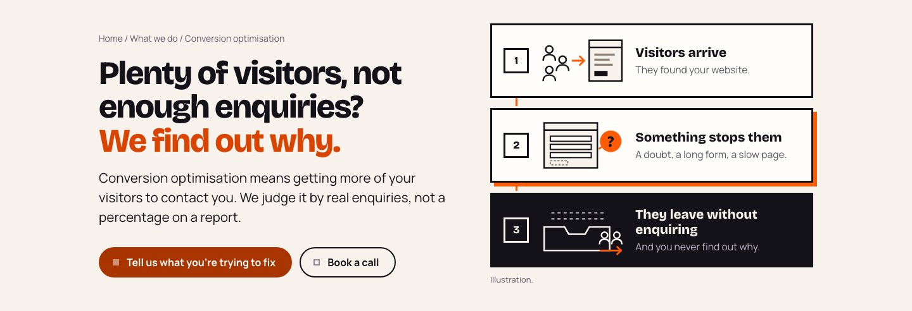
G2 implementation (production build)
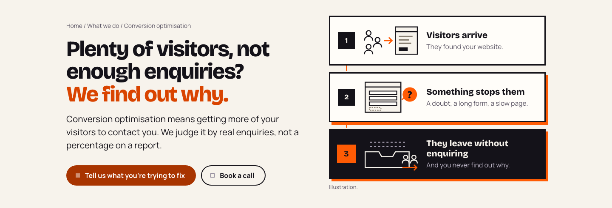
Four places
Approved G1 mockup
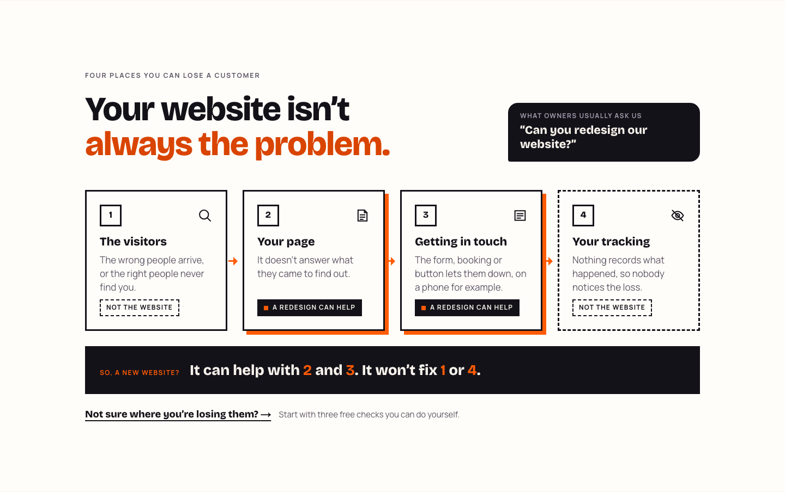
G2 implementation (production build)
How we work
Approved G1 mockup
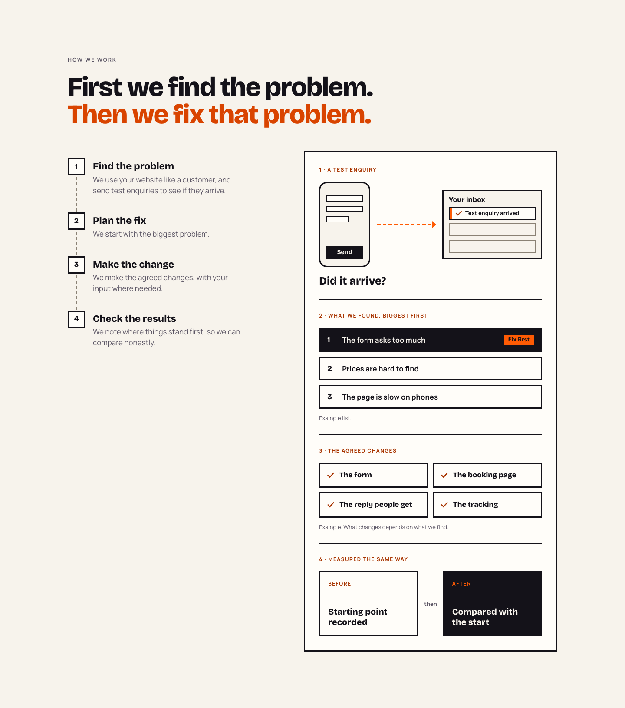
G2 implementation (production build)
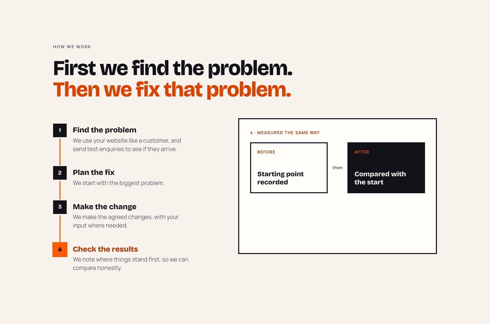
Did it work? becomes Improve, Measure, Review (CO-D06 revised)
Approved G1 mockup
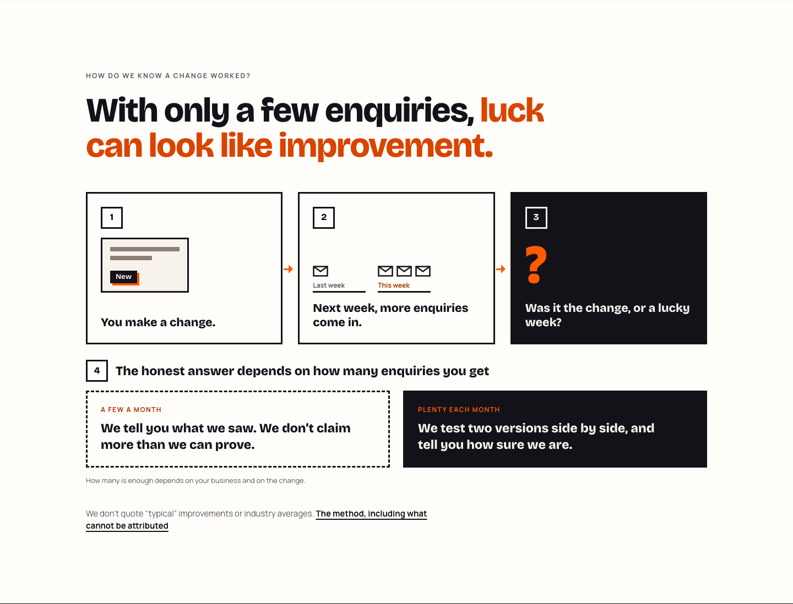
G2 implementation (production build)
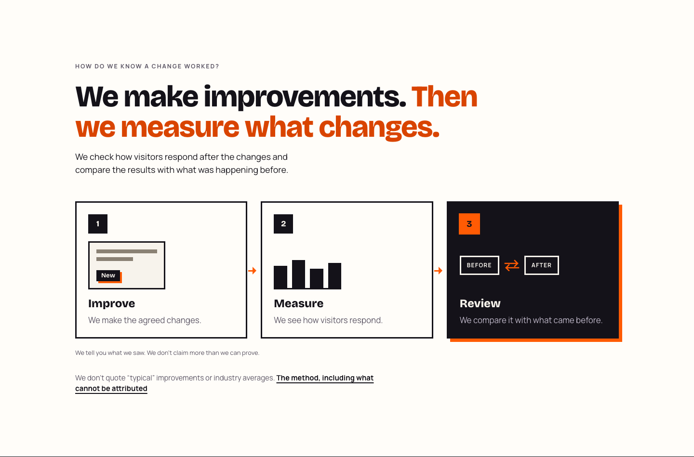
Our own form (CO-D07 revised headline and takeaway)
Approved G1 mockup
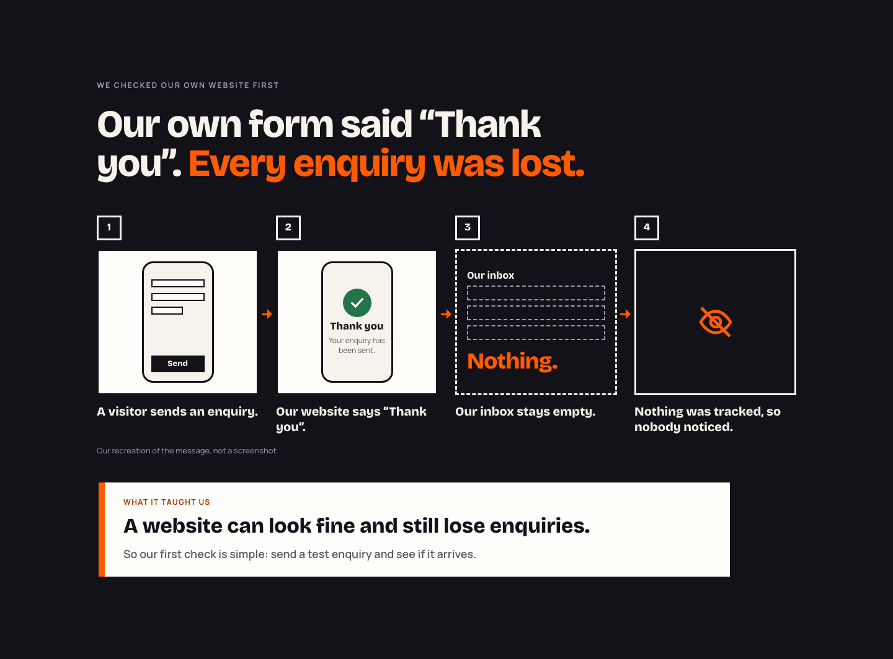
G2 implementation (production build)
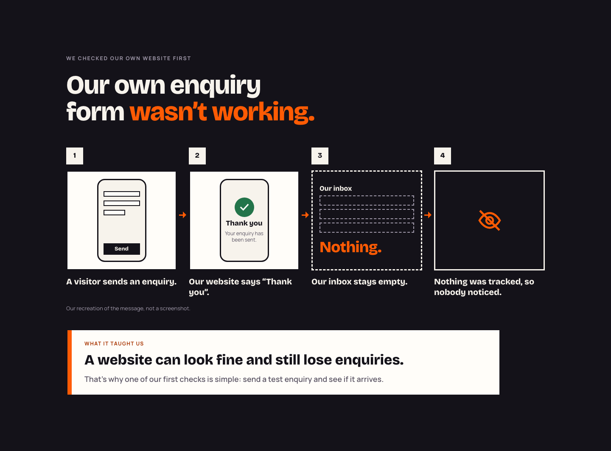
Close
Approved G1 mockup
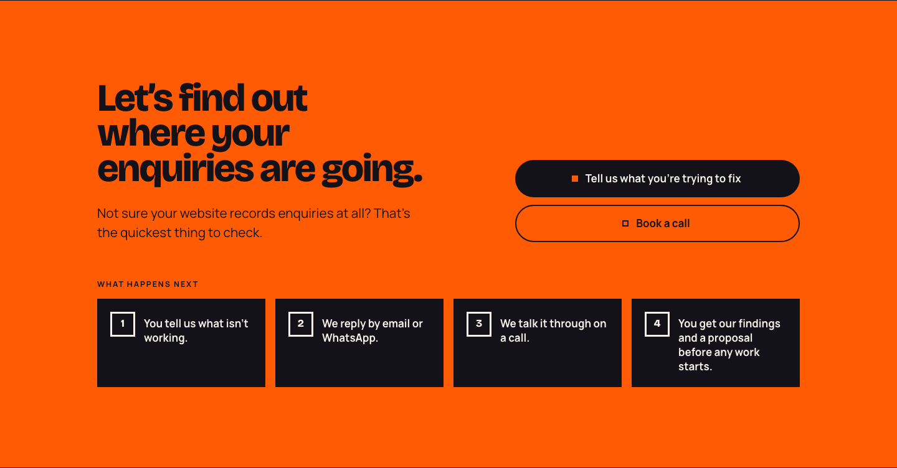
G2 implementation (production build)
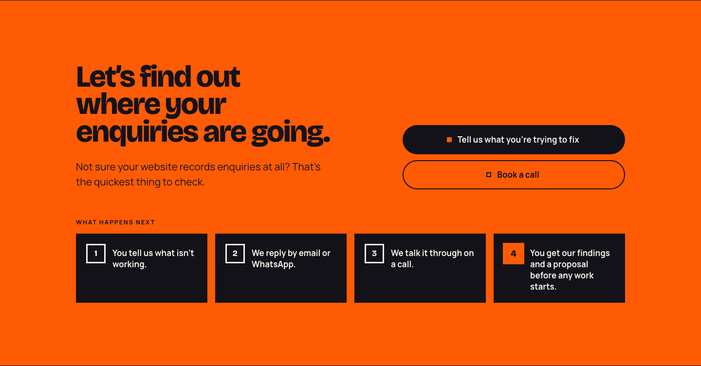
Mobile 390 (each section after its journey completes)